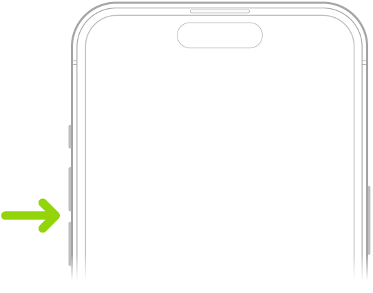

Coursework / HCI
Human–Computer
Interaction
Human–Computer Interaction assignments, organised by homework number. Each submission connects evidence with analysis and design decisions.
Mingyu Zhang · This coursework portfolio is in progress.
Lecture homework

HW1 · Lectures 1–3Everyday interaction
Affordances, Gestalt failures and dark patterns. Six illustrated analyses with proposed improvements.
Draft · personal observations pending HW2 · Lectures 4–6People, visions & input
An HCI researcher, The Ultimate Display, and an input device or technique.
Not started · task outline HW3 · Lectures 7–9Designing for AR
Three ideas, a prototype, and evaluation with another person.
Not started · task outline HW4 · Lectures 10–12Computing beyond the phone
Smartphone form, ubiquitous computing, and future mixed-reality apps.
Not started · task outlineLabwork
Practical work has its own journals. The two setup tasks on page 2 of HW1.pdf are grouped under Lab Homework 1.